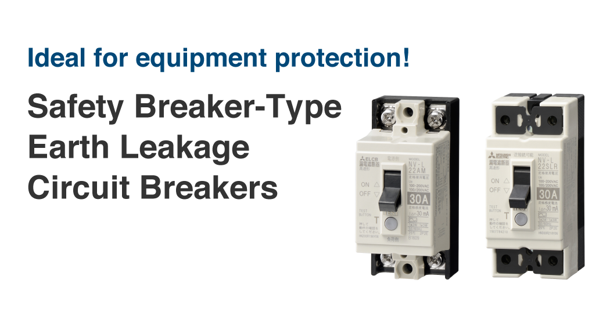

Low-voltage Circuit BreakersCircuit Breakers for Equipment


Safety Breaker-Type Earth Leakage Circuit Breaker
This is a compact earth leakage circuit breaker that is approximately the same size as the optimal safety breaker for equipment protection.
The lineup consists of dedicated ground fault protection products (without OC) and products that include overload and short circuit protection (with OC).
Because the lineup contains a large variety of terminal variations (crimp terminals, tab terminals), these products can be used in a wide range of equipment including distribution panels, control panels, and inside equipment.
Product Lineup
| Frame (A) | 30 | |||||
|---|---|---|---|---|---|---|
| Application | Dedicated ground fault protection product (without OC) | |||||
| Model | NV-L20SL | NV-L20AM | NV-L20AME | |||
| Appearance |  |
 |
 |
|||
| Phase line | 1Φ2W | |||||
| Number of poles, number of elements | 2P0E | |||||
| Rated voltage (VAC) | 100-200 | |||||
| Rated current (A) Standard ambient temperature 25°C |
－ | |||||
| Rated current (A) Standard ambient temperature 40°C |
Maximum applied current: 30 | |||||
| High-speed type | Rated sensitivity current IΔn | mA | 15 30 | |||
| Earth leakage detection characteristic | Type AC | |||||
| Rated short-circuit breaking capacity (kA) |
JIS C 8201-2-2 Ann.2 (Icu) |
AC | 200V | Rated conditional short-circuit current (Icc) 1.5 | ||
| 100/200V | Rated conditional short-circuit current (Icc) 1.5 | |||||
| 100V | Rated conditional short-circuit current (Icc) 1.5 | |||||
| JIS C 8201-2-2 Ann.1 (Icu) |
AC | 200-240V | － | |||
| 100/200V | － | |||||
| 100/120V | － | |||||
| UL 1077 | AC | 200-240V | － | |||
| 120/240V | － | |||||
| 100-120V | － | |||||
| IEC 60947-2 EN 60947-2 (Icu/Ics) |
AC | 230V | － | |||
| CE marking | － | |||||
| UKCA marking | － | |||||
| Compliant standards |
US UL standard 1077＋1053 (UR certified) | UL File No.E134317 | ||||
| Canada CSA Standard | C22.2 No.235 C22.2 No.144 |
|||||
| Frame (A) | 30 | ||||||
|---|---|---|---|---|---|---|---|
| Application | Dedicated ground fault protection product (with OC) | ||||||
| Model | NV-L22AM | NV-L22TH | NV-L21SLR | NV-L22SLR | |||
| Appearance |  |
 |
 |
||||
| Phase line | 1Φ2W, 1Φ3W | 1Φ2W | 1Φ2W | 1Φ2W, 1Φ3W | |||
| Number of poles, number of elements | 2P2E | 2P1E | 2P2E | ||||
| Rated voltage (VAC) | 100-200 | 100 | 100-200 | ||||
| Rated current (A) Standard ambient temperature 25°C |
15 20 30 | － | 15 20 30 | ||||
| Rated current (A) Standard ambient temperature 40°C |
－ | 15 20 | － | ||||
| High-speed type | Rated sensitivity current IΔn | mA | 15 30 | (10) 15 30 | 15 30 | 10 30 | |
| Earth leakage detection characteristic | Type AC | ||||||
| Rated short-circuit breaking capacity (kA) |
JIS C 8201-2-2 Ann.2 (Icu) |
AC | 200V | 1 | 1 | － | 1.0 |
| 100/200V | 1.5 | － | － | 1.5 | |||
| 100V | 1.5 | 1 | 1.5 | 1.5 | |||
| JIS C 8201-2-2 Ann.1 (Icu) |
AC | 200-240V | － | ||||
| 100/200V | － | ||||||
| 100-120V | － | ||||||
| UL 1077 | AC | 200-240V | － | ||||
| 120/240V | － | ||||||
| 100-120V | － | ||||||
| IEC 60947-2 EN 60947-2 (Icu/Ics) |
AC | 230V | － | ||||
| CE marking | － | ||||||
| UKCA marking | － | ||||||
| Compliant standards |
US UL standard 1077＋1053 (UR certified) | UL File No.E134317 | |||||
| Canada CSA Standard | C22.2 No.235 C22.2 No.144 |
||||||
| Frame (A) | 30 | |||||
|---|---|---|---|---|---|---|
| Application | Dedicated ground fault protection product (with OC) | |||||
| Model | NV-L22TZU | NV-L22TYU | NV-L22AMU | |||
| Appearance |  |
 |
 |
|||
| Phase line | 1Φ2W, 1Φ3W | |||||
| Number of poles, number of elements | 2P2E | |||||
| Rated voltage (VAC) | 100-240 | |||||
| Rated current (A) Standard ambient temperature 25°C |
－ | |||||
| Rated current (A) Standard ambient temperature 40°C |
15 20 24 | 15 20 | ||||
| High-speed type | Rated sensitivity current IΔn | mA | 10 30 | |||
| Earth leakage detection characteristic | Type AC | |||||
| Rated short-circuit breaking capacity (kA) |
JIS C 8201-2-2 Ann.2 (Icu) |
AC | 200V | － | ||
| 100/200V | － | |||||
| 100V | － | |||||
| JIS C 8201-2-2 Ann.1 (Icu) |
AC | 200-240V | 1 | |||
| 100/200V | 1.5 | |||||
| 100/120V | 1.5 | |||||
| UL 1077 | AC | 200-240V | 1 | |||
| 120/240V | 1.5 | |||||
| 100-120V | 1.5 | |||||
| IEC 60947-2 EN 60947-2 (Icu/Ics) |
AC | 230V | 1.5/0.75 | |||
| CE marking | TÜV approval | |||||
| UKCA marking | Self-declaration | |||||
| Compliant standards |
US UL standard 1077＋1053 (UR certified) | UL File No.E134317 | ||||
| Canada CSA Standard | C22.2 No.235 C22.2 No.144 |
|||||